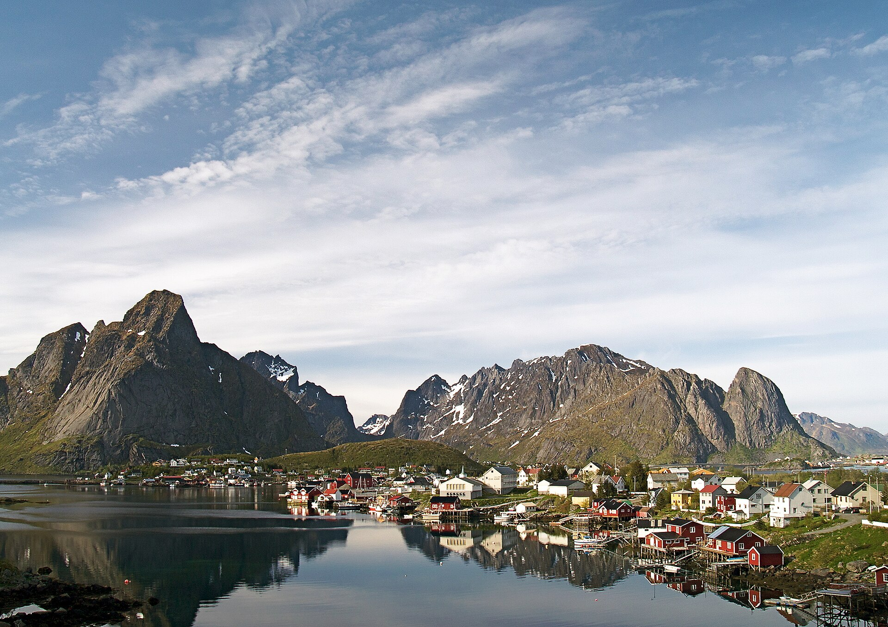
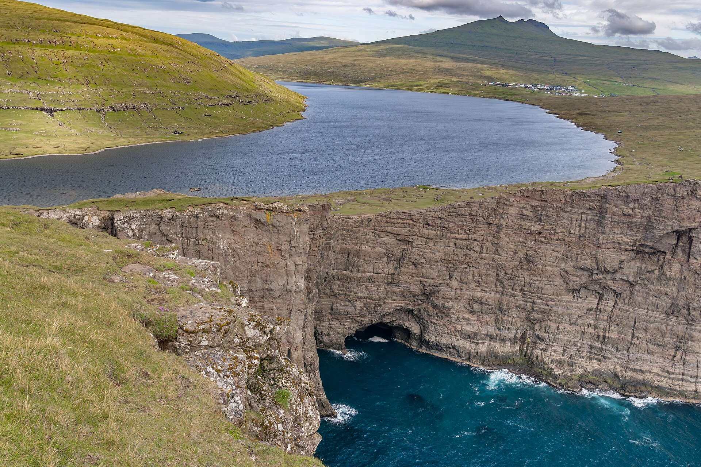
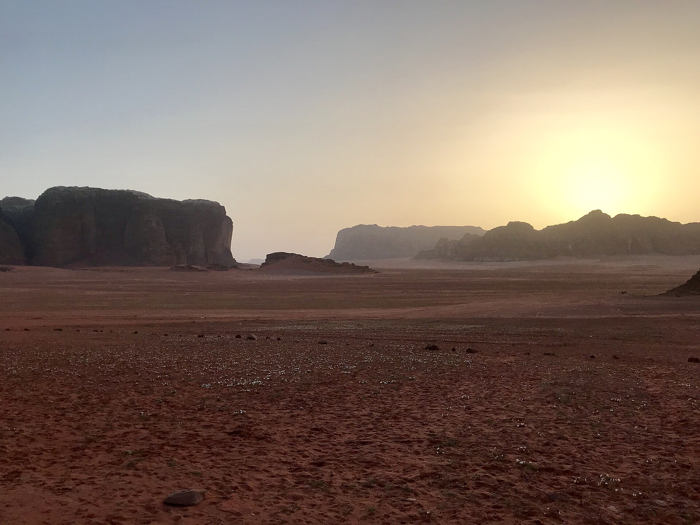

Soak
Warm water, cold air, no talking.

eight places / one instruction: slow down
The Blue Lagoon sits in a lava field where the ground itself is warm. You sink in, the steam closes around you, and the noise you carried here stops at the shoreline.
Go in the last hours of daylight. The water holds the heat of the day and the sky turns the colour of the page you are reading.
Reine sits above the Arctic Circle, where summer light lasts through the night and the fjord holds the mountains upside down. You lose track of the hour. That is the point.

Sørvágsvatn lies 30 metres above the Atlantic. From the cliff at Trælanípa it looks ready to pour straight into the ocean. Walk out, stand still, and the wind is the only sound you will hear all day.


Twice a day, Hill Inlet's white silica sand swirls into new patterns. No two visits are the same photograph.

The Nāpali Coast has no road along it. The ridges you are looking at have stayed this quiet because they are genuinely hard to get to, and the people who make the effort go quiet too.

When the sun drops behind the jebels, Wadi Rum goes red, then purple, then black. The desert quiet is a language. You learn it in one night.

Naviti Island, Fiji. One tree, one beach, and nobody else on it.
Ryōan-ji's garden has kept its five rock groups and raked gravel for five hundred years. Legend says only enlightenment lets you see all fifteen stones from the veranda.
Whatever you see, the point is that you sat still long enough to look.

Eight places, eight kinds of silence. Pick the one you are missing.
Warm water, cold air, no talking.
Light that never leaves, water that never ends.
One sound, everywhere, all day.
The beach redraws itself twice a day.
Ridges that make your problems the right size.
A desert night with more stars than sky.
A beach with one set of footprints: yours.
Five hundred years of the same five rocks.
Every one of these is reachable with a commercial flight and one boat, bus or road. None needs a guide, a pass, or a plan past the first morning.
Every place above, with the honest details: the best view, when to go, what it costs, whether the weather plays along, and how far it is from you. Tick your places, then let the AI draft the days.
Tick places in the panels above, then Relaxagent plans the days:
Relaxagent is listening. Tell Relaxagent one true sentence about your week.
Drag it. Zoom it. These are real coordinates, not a mood board.
Pick the silence that fits your week, then book the flight before you talk yourself out of it.